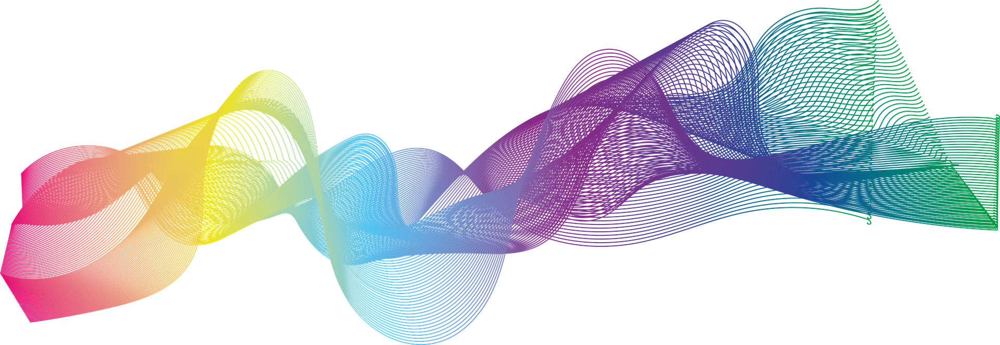

What is JDSP?
jDSP is a library of signal processing tools written in Java aimed at providing functionalities as available in scipy-signal package for Python. The goal is to provide easy-to-use APIs for performing complex operation on signals eliminating the necessity of understanding the low-level complexities in the processing pipeline.
This is an open-source project under the MIT License and is free to use in commercial applications.